ԲՆՈՒԹԱԳԻՐ
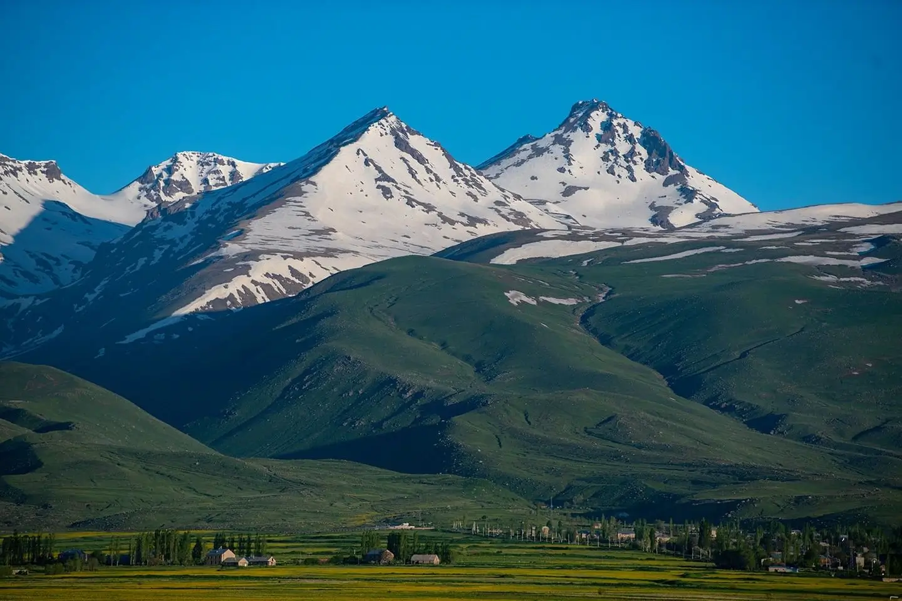
ՏՎՅԱԼՆԵՐ
Ուղղություն
Հյուսիսից
Հյուսիս-արևելքից
Արևելքից
Հարավից
Հարավ-արևմուտքից
Արևմուտքից
Սահմանակից մարզ
Շիրակ
Լոռի
Կոտայք
Արմավիր
Երևան
-
Հարևան երկրներ
Թուրքիա (35 կմ)
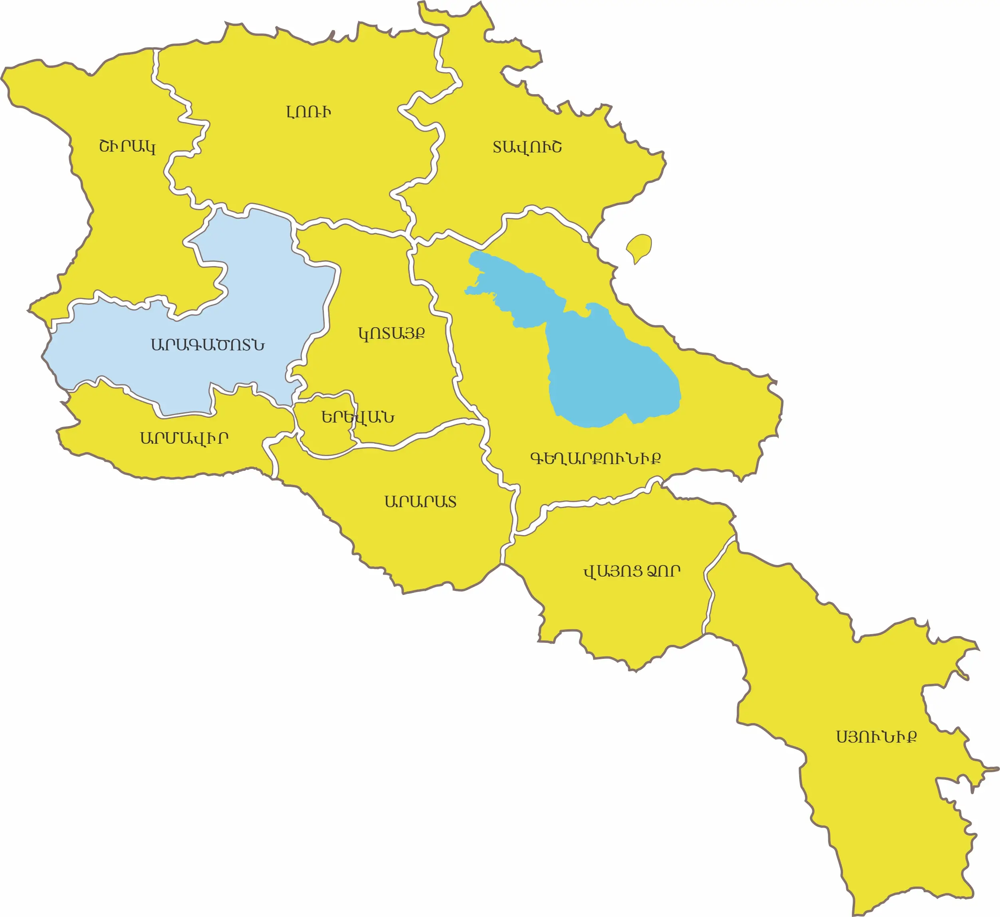
Հիմնադրումը
Արագածոտնի մարզը ձևավորվել է 1995թ. ապրիլի 12-ին
Տարածքը
Միջին մեծության մարզ է, զբաղեցնում է ՀՀ ընդհանուր տարածքի 9,3%-ը (2 756 կմ²)
Վարչական կենտրոնը
Աշտարակ՝ մարզի ամենախոշոր քաղաքը: Գտնվում է Երևանից 20 կմ հյուսիս-արևմուտք։ Տարածքը բնակեցված է հնագույն ժամանակներից, գրավոր աղբյուրներում՝VII դարից: Քաղաքային բնակավայր է IX–X դարերից, Բագրատունիների թագավորության շրջանում։
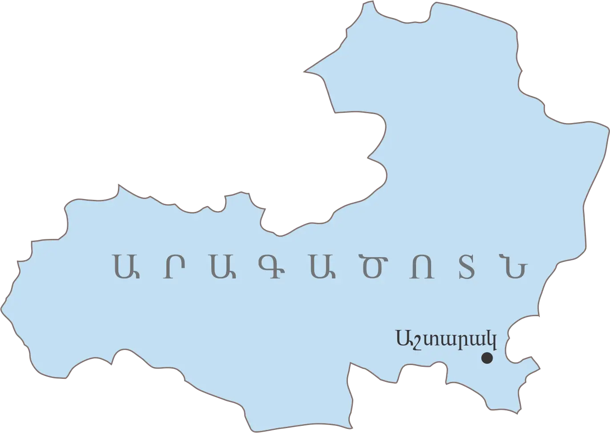
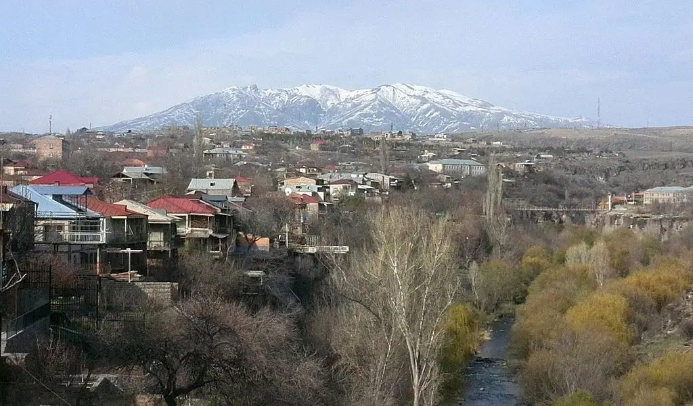
Ցուցիչ
Տարածք
Կոորդինատներ
Բարձրություն
Ամենաբարձր գագաթ
Ամենացածր կետ
Վարչական կենտրոն
Տարածաշրջաններ
Քաղաքներ
Գյուղեր
Բնակչություն
Հեռավորություն Երևանից
Փոստային դասիչ
Թեժ գիծ
Վեբ կայք
Տվյալ
2,756 քառ. կմ (9,3%)
40°52′45″ հս.լ.,
950 մ, միջ․ 1030–4090 մ
Արագած (4,090 մ)
950 մ
Աշտարակ
Աշտարակ, Արագած, Ապարան, Թալին
Աշտարակ, Թալին, Ապարան
117
168,100 (4,3%) /2002թ./
18 կմ
0201–0514
(+374 232) 321-74
www.aragatsotnmarz.am
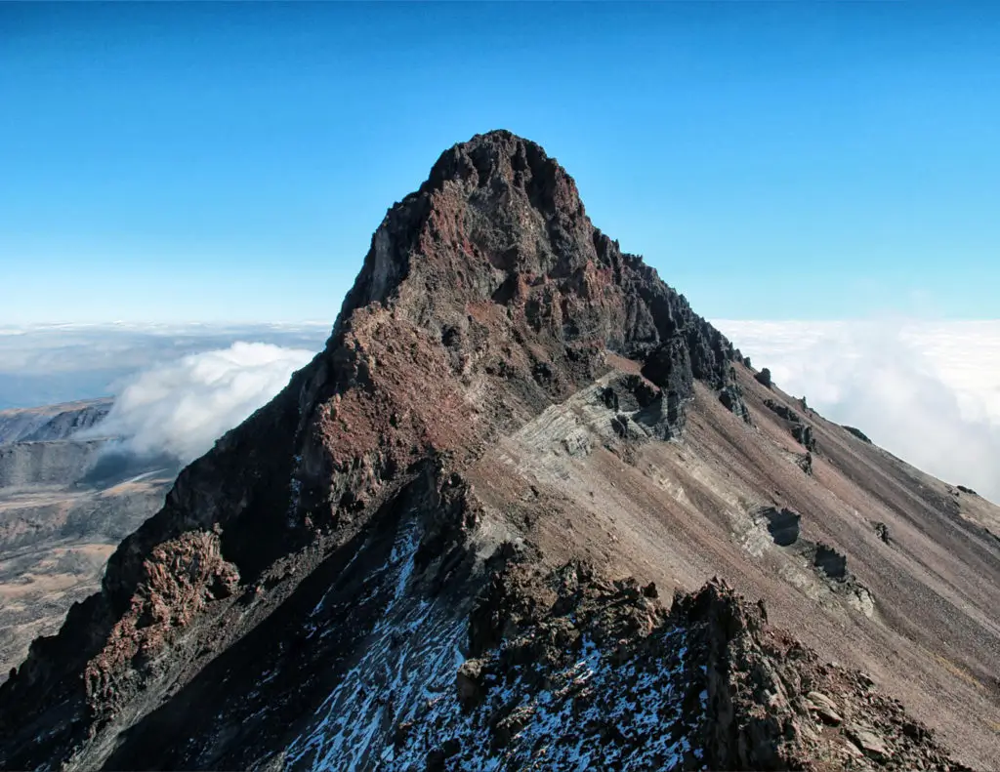
Ամենաբարձր գագաթը Արագած (4,090 մ)
Մարզային հեռախոսային կոդեր
Բնակավայր
Աշտարակ
Թալին
Ապարան
Ծաղկահովիտ
Կոդ
232
249
252
257
Մարզպետարան/Կապ
Հասցե․ ք. Աշտարակ, 4
Վեբ․ aragatsotn.mtad.am
Էլ․ հասցե․ aragatsotn@mta.gov.am
Հեռ./ֆաքս․ (+374 232) 32251
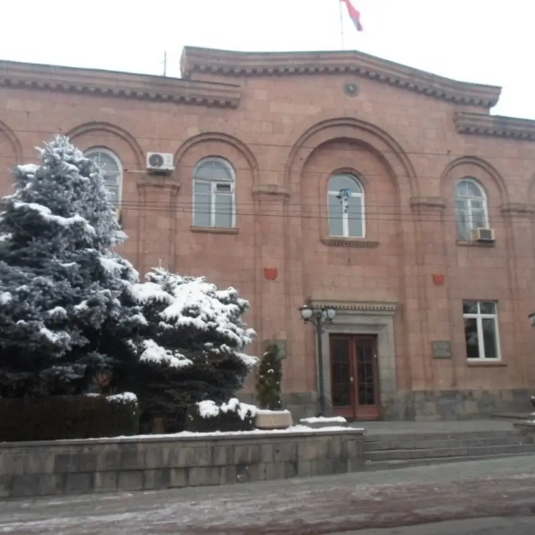
ԻՆՉՊԵՍ ՀԱՍՆԵԼ
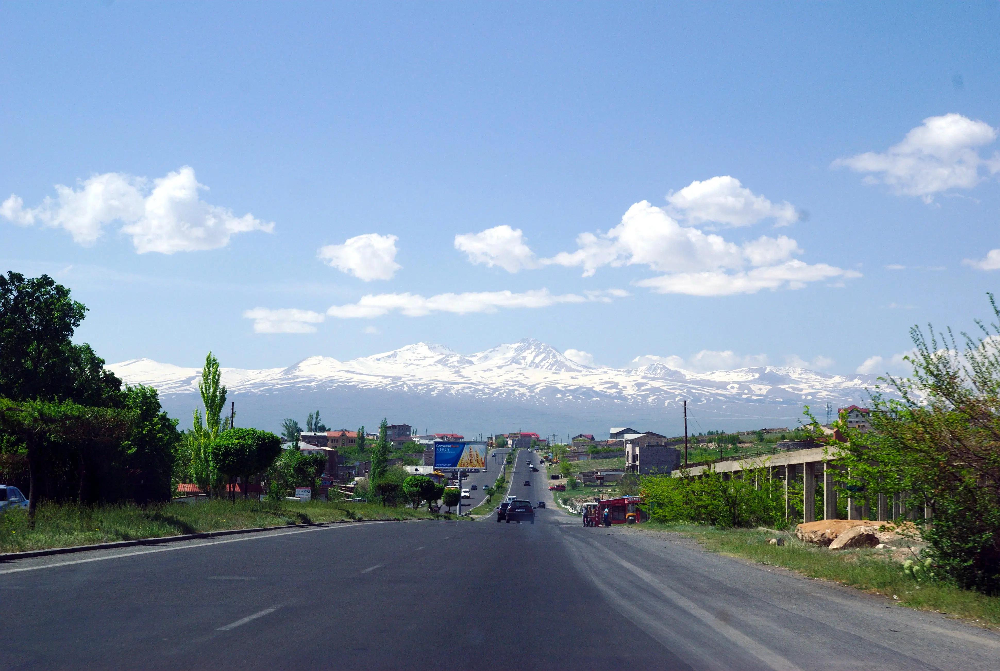
Ավտոմայրուղիներ /ճանապարհներ
Արագածոտնի տարածքով անցնում են հանրապետական նշանակության 3 հիմնական ավտոմայրուղիներ․
- Երևան – Աշտարակ – Թալին – Գյումրի (Մ-1)
- Երևան – Աշտարակ – Սպիտակ (Մ-3)
- Երևան – Արմավիր – Քարակերտ – Գյումրի
Մարզով անցնում է նաև Հյուսիս–Հարավ միջպետական ճանապարհը։
Աշտարակի մայրուղու միջոցով մարզը միանում է մայրաքաղաքին։
Միջպետական նշանակության ճանապարհները համեմատաբար բարվոք վիճակում են։
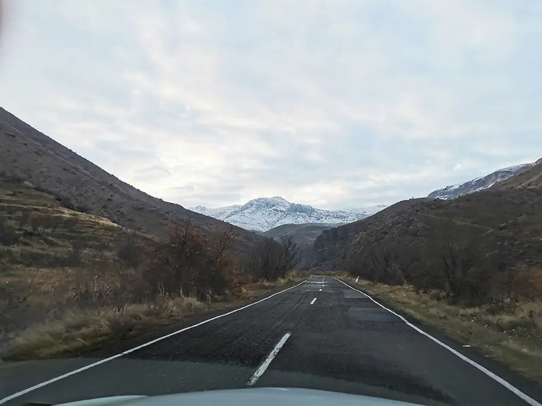
Ինչպես հասնել Աշտարակ
- Լավագույն տարբերակը՝ ավտոբուս կամ երթուղային
- Մեկնում են Կիլիկիա ավտոկայանից և Կենտրոնական երկաթուղային կայարանից։
- Ճանապարհը տևում է մոտ 40 րոպե։
- Տոմսի արժեքը՝ 250 դրամ:
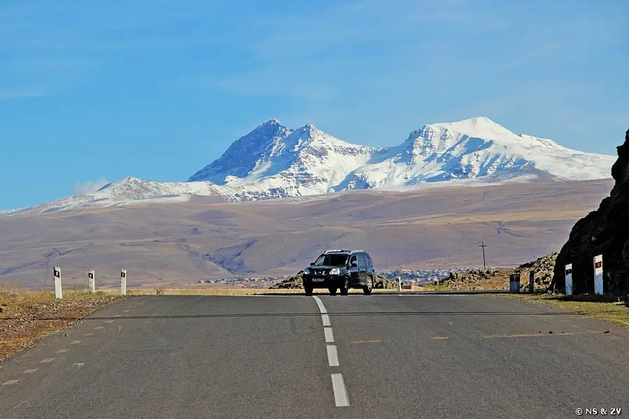
Երկաթուղի
ՀՀ գլխավոր երկաթուղու մոտ 30 կմ հատված անցնում է Արագածոտնի տարածքով
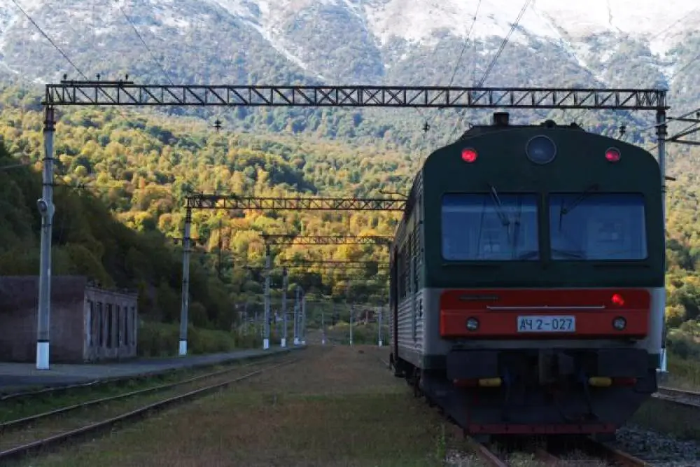
ԿԼԻՄԱ
Արագածոտնի կլիման առանձնանում է բնակլիմայական պայմանների մեծ բազմազանությամբ՝ պայմանավորված բարձրության մեծ տատանումներով։

Կլիմայի առանձնահատկություններ
- Մարզում առկա են ինչպես չոր ու տաք ցածրադիր գոտիներ, այնպես էլ սառնաշունչ բարձր լեռնային շրջաններ։ Ցածրադիր գոտիներում (Արարատյան դաշտին հարող տարածքներում) ամառները տաք են, ձմեռները՝ չափավոր ցուրտ: Բարձր լեռնային գոտում (Արագած բ/լ) ամառները զով են, ձմեռները՝ խստաշունչ:
- Մարզի տարածքին բնորոշ են մշտական զով զեփյուռները
- Զածրադիր վայրերում՝ բարեխառն լեռնային կլիմա
- Ափամերձ շրջաններում կլիման ավելի մեղմ է, լեռնանցքներում՝ խիստ։
Եղանակների բնութագիր
Ձմեռ - երկարատև, ցուրտ, բուքով և մառախուղներով․ հատկապես բարձր լեռնային գոտիներում ձնածածկույթը կայուն է և հաստ։Բուք՝ Թալինում միջինը 6 օր, Ապարանում՝ 17 օր, Արագած բ/լ-ում՝ մինչև 80 օր։
Ամառ - ցածրադիր գոտում տաք ու չոր, լեռնային շրջաններում՝ զով և տեղումնառատ։
Գարուն – զով, տեղումներ շատ, հաճախ լինում են քամիներ ու ամպրոպներ։
Աշուն – համեմատաբար մեղմ, սկզբում արևոտ, ապա՝ ավելի խոնավ, մառախուղներով։
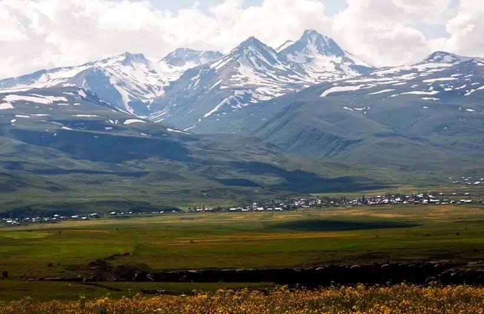
Ջերմաստիճան
Ցածրադիր գոտիներում
- Հուլիս՝ միջին ջերմաստիճան՝ +22°C…+25°C
- Հունվար՝ միջին ջերմաստիճան՝ է -3°C …-4°C
Նախալեռնային գոտում
- Միջին տարեկան ջերմաստիճան՝ +8°C…+11 °C
- Ամռանը՝ +22…+25°C
Լեռնայինում գոտիներում
- Միջին տարեկան ջերմաստիճան՝ +4°C…+6°C
Բարձր լեռնային գոտում (Արագած բ/լ,2700 մ-ից բարձր՝)
- Միջին տարեկան ջերմաստիճան՝ 0°C-ից ցածր
- Արագածի գագաթին (3229 մ) մ.տ.ջ՝ մինչև −2.6°C։
- Հուլիս՝ միջին ջերմաստիճան՝ +9°C…+15°C
- Հունվար՝ միջին ջերմաստիճան -2,6°C –ից -12°C
Բացարձակ ջերմաստիճանները մարզում տատանվում են +41°C–ից (Աշտարակ) մինչև −34°C (Արագածի բ/լ)։
Տեղումներ
- Մերձգագաթային շրջաններում՝ 850–1100 մմ տարեկան
- Ցածրադիր գոտիներում՝ 300–320 մմ տարեկան
- Արագածի գագաթամերձ մասերում նույնիսկ ամռանը պահպանվում են ձնաբծեր
- Ամպրոպները հաճախ ուղեկցվում են կարկուտով։
- Մարզում հարաբերական խոնավությունը բարձր լեռնային շրջաններում հասնում է 80–90%։
- Տարվա ընթացքում դիտվում է մառախուղ՝ 60–160 օր։
Քամիներ
- Միջին տարեկան արագությունը՝ 1–2 մ/վ
- Առավելագույնը՝ 18–22 մ/վ, լեռնային շրջաններում՝ մինչև 35 մ/վ, պոռթկումներով՝ մինչև 40 մ/վ։
Արևափայլ
- Տարեկան միջին տևողությունը՝ 2471–2968 ժամ։
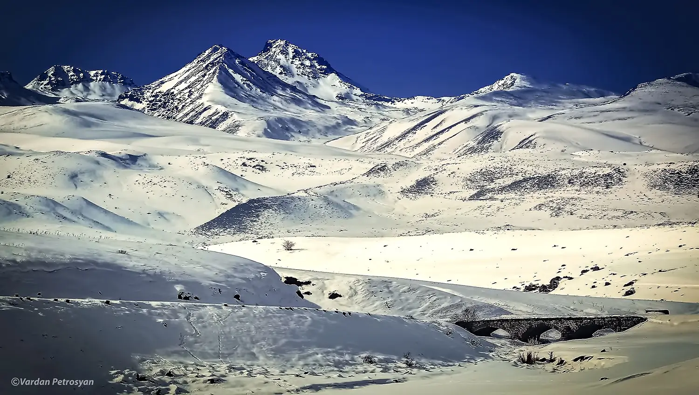